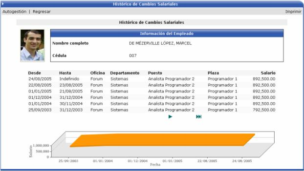

En esta opción el usuario puede ver su historial de cambios salariales en forma gráfica desde que ingresó a la empresa hasta la actualidad.
En esta pantalla se observa el gráfico de variación de los registros que se despliegan en ella, tomando en cuenta la relación de la fecha en que rige el salario, con el monto de dicho salario:

También si se quiere ver el desglose del monto del salario, o ver que elementos lo componen, solamente basta con hacer click encima del registro deseado y el sistema desplegará la información en forma gráfica, y porcentual de cada uno de los componentes, como lo muestra la siguiente pantalla: